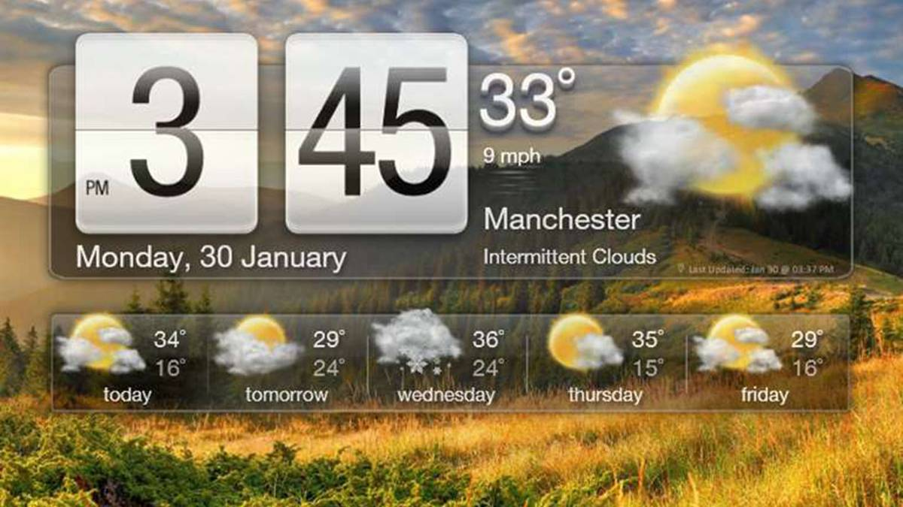

Desktop Widget
They are downloadable and interactive tools that are
installed on the desktop of the computer.Windows Desktop Gadgets
(equivalent to Windows Sidebar in Windows Vista) is
a widget engine for Microsoft Gadgets. Its widgets, called gadgets, can perform various tasks, such as
displaying the date and time and displaying CPU usage. Various gadgets are supplied with Windows,
and anyone can
develop gadgets. It was introduced with Windows Vista, but in Windows 8 they were
permanently removed. The gadgets
competed with Konfabulator (later called the Yahoo! Widget Engine) and Google
Desktop, which also added similar features.

General
The gadgets are based on a combination of script and HTML. They can be used
to display information such as system time and Internet features such as RSS feeds
and to control external applications such as Windows Media Player. It is also possible
to simultaneously run multiple instances of a gadget.